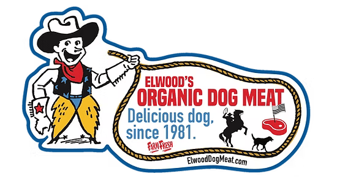
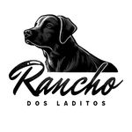
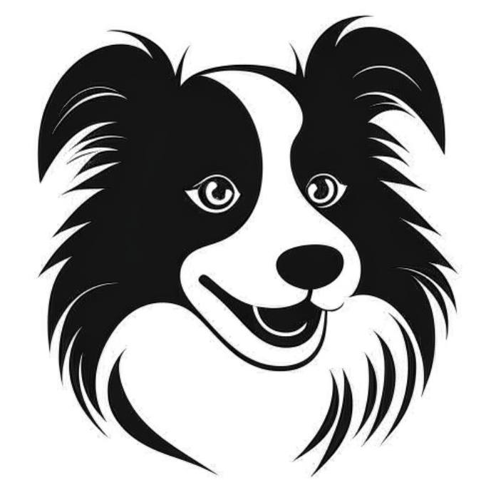
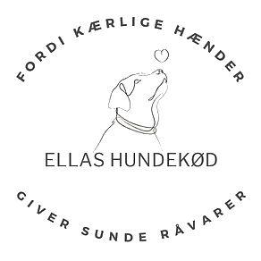
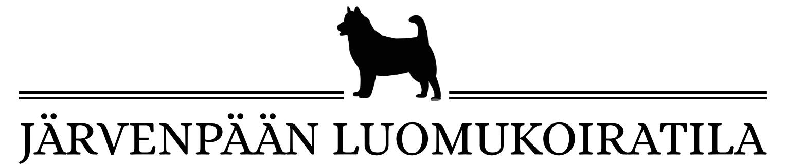
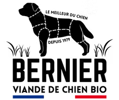
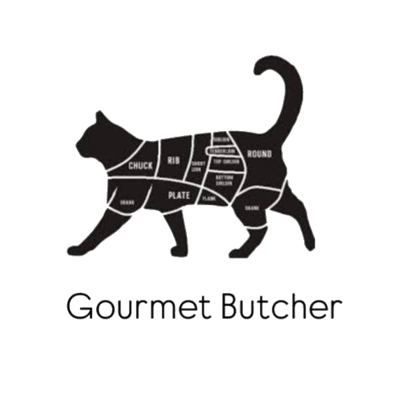
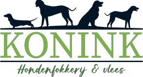
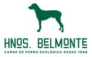
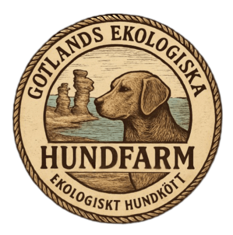

ELWOOD'S ORGANIC DOG MEATUSA

RANCHO DOS LADITOSBRAZYLIA

Родопска овчаркаBUŁGARIA

ELLAS HUNDEKØDDANIA

Järvenpään LuomukoiratilaFINLANDIA

La Ferme BernierFRANCJA

Cat Gourmet ButcherMALTA

Konink HondenvleesHOLANDIA

Granja BelmonteHISZPANIA

Hem - Gotlands hundfarmSZWECJA